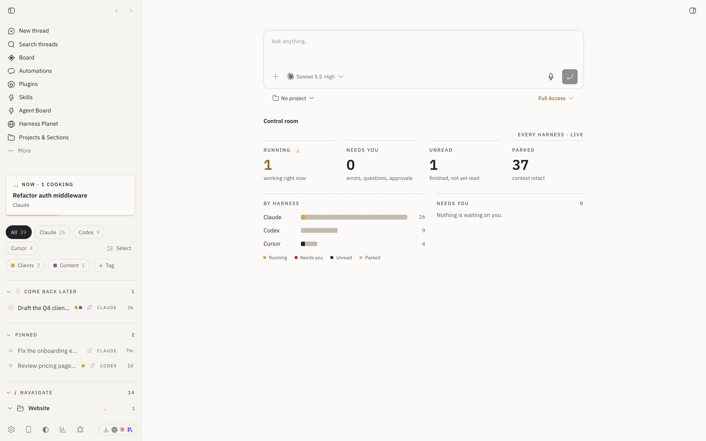
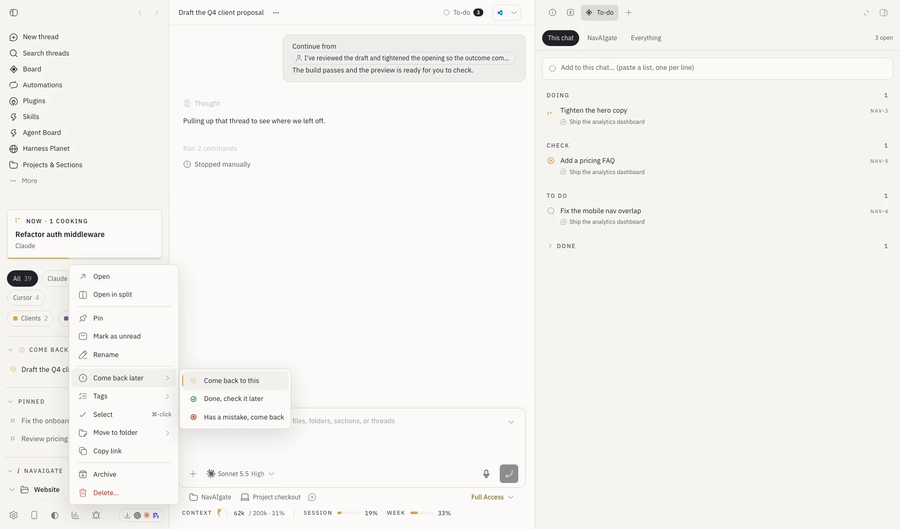
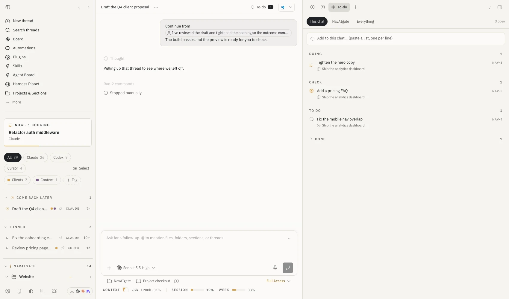
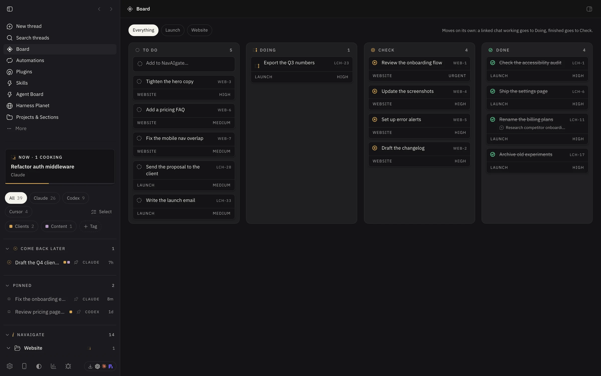
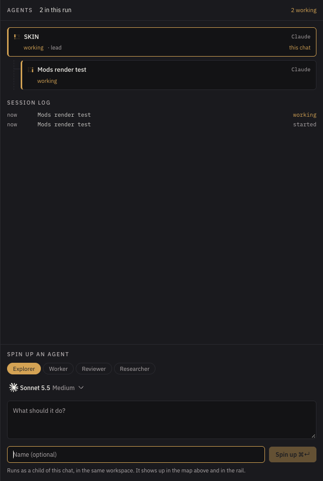
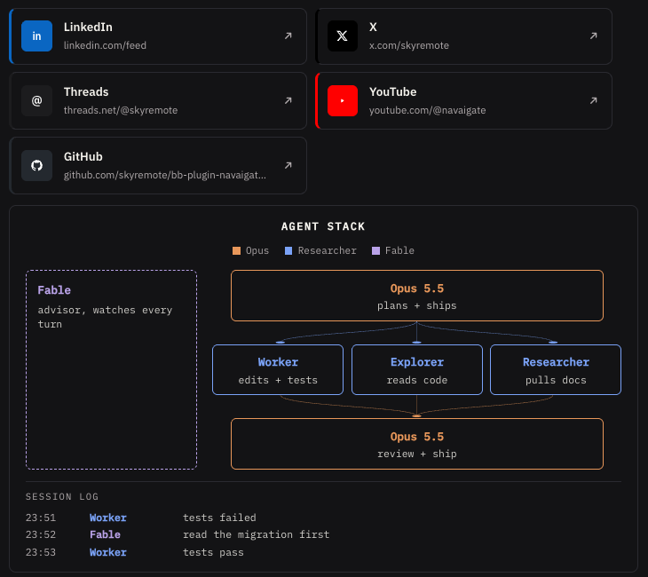

NavAIgate Workspace
So I use bb every day to run Claude, Codex and Cursor side by side, and the thing I kept losing was what each one was actually doing, so we built a sidebar that shows what every harness is working on, a to-do list that lives next to the chat it came from, and a board that moves when the work moves. This page is how it all works, one piece at a time.
Install it in two commands
You need bb 0.44 or later, and then it's two lines in a terminal, and the second one switches on the NavAIgate theme, which you can change back any time in Settings, Appearance.
bb plugin install git:https://github.com/skyremote/bb-plugin-navaigate-skin.git@^0.8.3 bb theme set plugin:navaigate-skin:navaigate
If bb doesn't switch to the new sidebar on its own, pick NavAIgate rail in Settings, Appearance, Sidebar, or run this:
bb settings ui set sidebar.threadListProvider '"navaigate-skin/rail"'
See what every harness is working on
The left-hand side reads like a run sheet now, and the card at the top tells you what's working right now, with a small gold lattice that turns while a chat is busy, and how many chats need you.
- Every chat shows the harness it runs on, CLAUDE, CODEX or CURSOR, and the chips at the top filter to one of them.
- Chats sit under their project, and with Projects & Sections installed they sit inside your real folders on disk.
- Click a section heading to fold it, and drag a heading above another one to change the order.
- Right-click anything, a chat, a folder, a project heading or a tag, and you get the full menu for it.


Tag it, flag it, come back to it
- Press + Tag under the harness chips, type a name, click the small square to pick a colour, and press Enter.
- Right-click a chat, go to Tags, and tick the tags you want on it. Click a tag chip at the top to show only those chats.
- Right-click a chat, go to Come back later, and pick why. It moves into its own section at the top so you can't miss it.
- To clear a flag, right-click it again and choose Clear the flag.


Your real folders, in the sidebar
Each project is a folder on your drive, and the folders you add show up underneath it, and the point is you choose which ones you want to see, so the project root stays the same and you organise inside it.
- Hover a project heading and press the folder-plus button for a new folder, or the open-folder button to add folders that already exist on the drive.
- Drag a chat onto a folder to file it there. That only changes where it's listed, and nothing moves on disk.
- Start a chat inside a folder with the speech-bubble button on the folder, and the agent works in that folder, so its files land there.
- Right-click a folder to rename it, add a subfolder, move it, copy its path, or take it off the sidebar. Taking it off the sidebar keeps every file.
Select a few at once
Hold ⌘ and click to pick chats one by one, hold ⇧ and click to pick a run of them, or press Select next to the harness chips to get checkboxes. "Needs you" has its own select-all button. A bar appears at the bottom where you can flag, tag, pin, archive or delete the lot, and delete asks you once for the whole batch. Press Esc to clear it.
Say it once, and it's on the list
The quickest way is just to tell the agent, so for example "we've got the hero copy, a pricing FAQ and the nav fix to do", and it adds three items linked to that chat, and you'll see them straight away.
- Open the list on the right with ⌘ ⇧ D (Command-Shift-D), or press the To-do button in the chat header, which also shows how many are open.
- Switch between This chat, the chat's folder and Everything at the top.
- Type in the box and press Enter. Paste a list and every line becomes its own item.
- Click the ring next to an item to tick it off, double-click the text to rename it, and right-click to move it, link it to this chat or folder, or delete it.


A board that moves itself
Board is in the sidebar navigation, and it has four columns, To do, Doing, Check and Done, and the difference is that it moves on what the chats are actually doing, not on what an agent says about itself.
- When a chat linked to an item starts working, the item moves to Doing on its own, with the lattice turning.
- When every linked chat has finished, it moves to Check, ready for you to look at.
- Nothing is ever moved to Done for you. Drag any card to put it where you want.
- The chips at the top filter by project, and the box in To do adds straight to the board.


Know where you stand before you hit a limit
Under the chat box there's a line that shows how much of the context the chat has used, with a small dial and a tick where auto-compaction starts, and next to it the plan and the session and weekly windows of the account that chat is running on. If you run more than one subscription through bb's Account Pooler, it shows the one that chat is actually using.
Talk to it, and hear what happened
Press Talk in the chat header, or ⌘ ⇧ E, and just say what you want done, and Savvy, a voice agent on ElevenLabs, writes it up as a clear prompt and sends it to whichever harness is in that chat. When the harness finishes, she tells you in a couple of sentences what was done, what's left and whether it needs you, and the Voice tab on the right keeps the whole transcript.
- Ask "what's it doing?" or "what did it say?" and she checks the chat for you.
- Say "stop it" and she stops the harness, or list things to do and she adds them to the to-do list.
- It needs an ElevenLabs API key in the plugin settings. The key stays on your bb server, and ElevenLabs bills the conversation to your account.
See the whole run, and start an agent when you want one
Open Agents on the right of any chat, or press ⌘ ⇧ A, and This run shows the chat and every sub-agent under it as a tree, live, with which harness each one is on, whether it's working or needs you, and a session log of every change while the panel is open. Your agents lists every agent you've defined in ~/.claude/agents, grouped like a crew, chief of staff first, then the leads, then the specialists. Pick one and it starts on the model its file pins, and a lead can run in its own chat so it can bring in sub-agents of its own.
- Pick a role (Explorer, Worker, Reviewer, Researcher) or one of your own agents, choose the harness and model with bb's own picker, write the task and press Spin up.
- It starts as a child of the chat you're in, in the same workspace, and appears in the tree and in the rail straight away.
- Click any card in the tree to jump into that agent's chat.


Answers that come back as a chart
Agents can draw a real chart in a reply instead of a list of numbers, and the plugin teaches them how. If you want to write one yourself, it's one line:
::nav-chart{kind="bars" title="Threads by harness" data="Claude:26,Codex:9,Cursor:4" highlight="Claude"}
The kinds are bars, stats, split and steps, and note adds a source line underneath.
Two more work the same way. ::nav-links turns a list of links into cards in each platform's own colour, so LinkedIn is blue, YouTube is red and X and Threads are black, and ::nav-pipeline draws an agent stack, who plans, who runs side by side, who reviews and who watches, with a session log underneath.
::nav-links{title="Posted" items="https://www.linkedin.com/... https://x.com/... https://youtube.com/..."}
::nav-pipeline{layers="Opus|plans|orange ; Worker|edits|blue , Explorer|reads|blue ; Opus|reviews|orange" side="Fable|advisor|plum"}


Shortcuts and where things are
What it touches
- To list your to-dos and see which account a chat runs on, it opens the Tasks and Account Pooler databases on your own machine read-only, and every change goes through those plugins' own controls.
- Tags, flags, section order and folder links are kept in bb's plugin storage on your bb server, so every window on that machine shows the same thing.
- The theme loads IBM Plex and Fraunces from Google Fonts, and nothing else leaves your machine. There's no account, no key and no tracking.
To go back to bb's own sidebar, choose it in Settings, Appearance, Sidebar, and to remove the plugin, run bb plugin uninstall navaigate-skin, which also deletes its tags, flags and folder links, while your to-do items stay in bb Tasks.